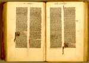

Bijbel, met een verklaring van de Hebreeuwse namen. Latijn. Handschrift op perkament, 526 ff., 195 x 120 mm. Noord-Frankrijk, tweede helft van de dertiende eeuw. -- (BPL 14 D)
In de jaren twintig van de dertiende eeuw werd de tekst van de Vulgaatvertaling van de bijbel, die als gevolg van het voortdurend overschrijven danig was bedorven, aan de universiteit van Parijs herzien. Sindsdien gold de Parijse redactie als de beste. Studenten in Parijs en elders hadden zich voortaan hieraan te houden. Bovendien werkte de revisie in de hand dat oude bijbels op grote schaal vervangen werden. Zo kon de nieuwe versie zich in betrekkelijk korte tijd over de hele Westerse wereld verspreiden.
De vraag naar nieuwe boeken, die hiervan het gevolg was, leidde vooral in Parijs, maar ook elders in Noord-Frankrijk, evenals in Oxford, tot de ontwikkeling van ateliers die zich op een min of meer gestandaardiseerde uitvoering van de bijbel toelegden. Het meest bekend zijn de kleine zakbijbels, die verbijsterend kompres geschreven zijn en die, afhankelijk van de beurs van de besteller, van meer of minder gedetailleerde initialen werden voorzien. Daarnaast ontstond een groter type, zoals het hier getoonde exemplaar, dat zich eveneens onderscheidt door een fijne kwaliteit perkament, waarop de tekst op superieure wijze is gekalligrafeerd.
Luxe exemplaren werden bovendien verfraaid met gehistorieerde initialen aan het begin van elk bijbelboek, soms zelfs ook aan het begin van de daaraan voorafgaande proloog. Het getoonde handschrift is er een fraai voorbeeld van. Het opmerkelijke van dit exemplaar is dat bij de initialen hier en daar in de marge nog een schets te zien is die globaal aangeeft, wat voor illustratie er moest komen. Zo ook op de openliggende pagina’s, folia 479v-480r, met het begin van de tweede brief van Petrus en de eerste brief van Johannes. Het summiere karakter van de schetsen laat zien dat de illustrator in de uitvoering nogal vrij was.
Literatuur
- L. Eleen, The illustration of the Pauline Epistles in French and English Bibles of the twelfth and thirteenth centuries. Oxford 1982.
- Vergelijk: R. Branner, Manuscript painting in Paris during the reign of Saint Louis. Berkeley [etc.] 1977 ( = California studies in the history of art. 18).
| vorige pagina | top pagina |